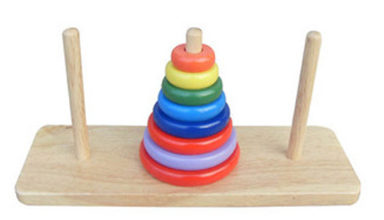

History and Rule
Legend has it that a temple in India had three pillars on which 64 gold disks were stacked from bottom to top, in order of size. Mahama ordered the Brahmin to rearrange the disks on another pillar, starting from below, in order of size. It is also stipulated that large disks cannot be placed on small disks and that only one disk can be moved at a time between the three columns. It was prophesied that when the plates were finished moving, the world would end. This legend is called the Tower of Brahma Puzzle.
If the legend is true, the monks needed 264-1 steps to accomplish this task; If they could move one plate per second, it would take 5849 billion years. The entire universe is now only 13.7 billion years old.
Reference
[1] Tower of Hanoi from wikipedia
[2] The development and preliminary validation of the Tower of Hanoi-Revised